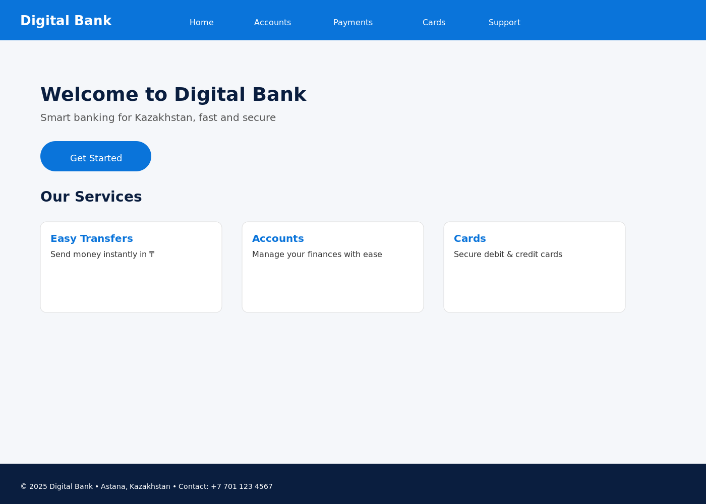
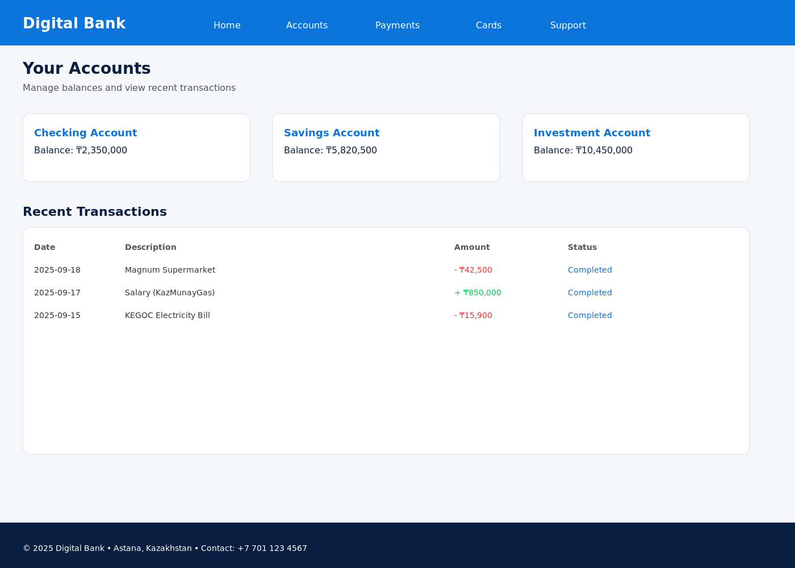
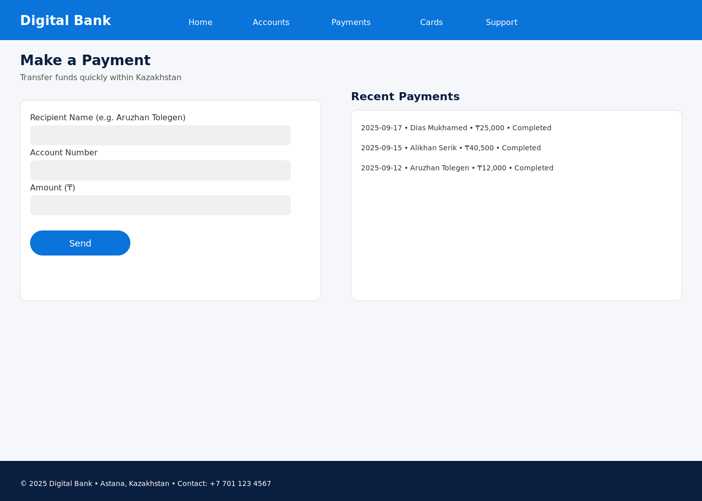
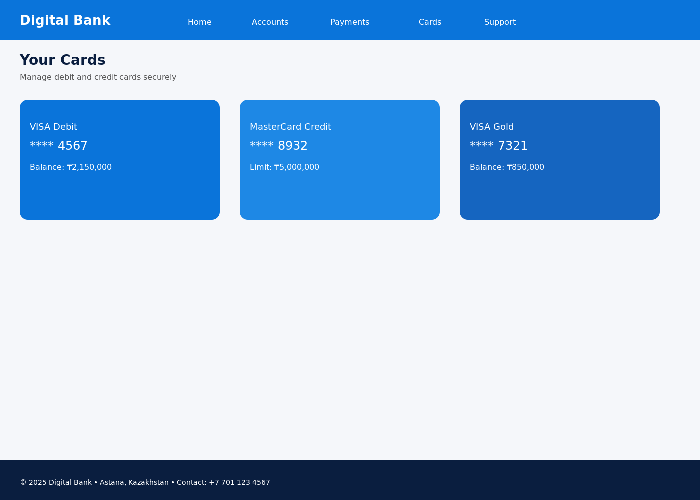
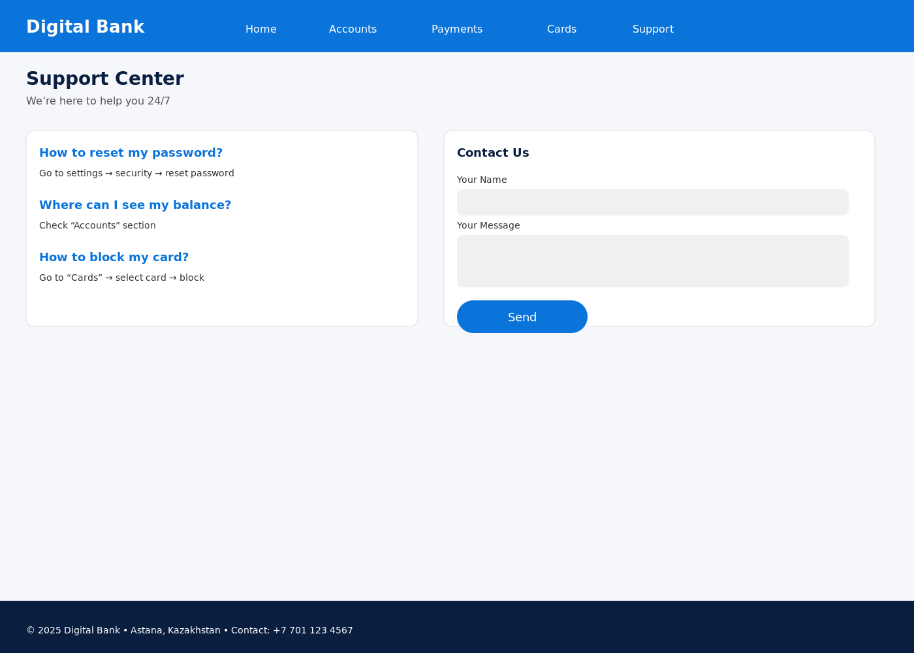
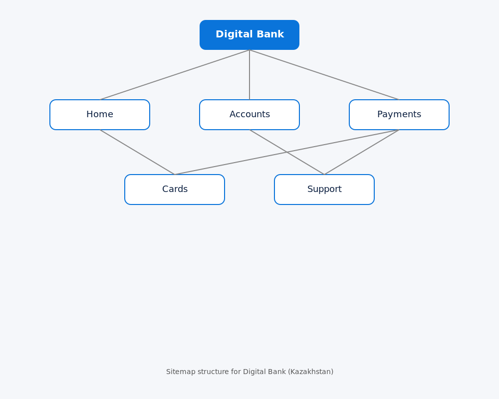

This project is a Digital Bank website designed to provide a modern online banking experience for users in Kazakhstan. The website allows clients to manage their accounts, make payments in tenge (₸), order and manage bank cards, and access customer support. The target users are individuals and businesses seeking fast, secure, and convenient financial services. The purpose of the site is to simplify banking operations, improve accessibility through digital tools, and ensure reliable support for customers anytime and anywhere.





